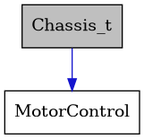

Chassis
Include dependency graph for Chassis.hpp:
![digraph {
graph [bgcolor="#00000000"]
node [shape=rectangle style=filled fillcolor="#FFFFFF" font=Helvetica padding=2]
edge [color="#1414CE"]
"1" [label="/github/workspace/include/hardware/Chassis/Chassis.hpp" tooltip="/github/workspace/include/hardware/Chassis/Chassis.hpp" fillcolor="#BFBFBF"]
"6" [label="hardware/Motor/MotorControl.h" tooltip="hardware/Motor/MotorControl.h"]
"7" [label="Arduino.h" tooltip="Arduino.h"]
"2" [label="arduino_freertos.h" tooltip="arduino_freertos.h"]
"8" [label="avr/io.h" tooltip="avr/io.h"]
"9" [label="avr/pgmspace.h" tooltip="avr/pgmspace.h"]
"5" [label="geometry_msgs/Twist.h" tooltip="geometry_msgs/Twist.h"]
"3" [label="queue.h" tooltip="queue.h"]
"4" [label="ros.h" tooltip="ros.h"]
"1" -> "2" [dir=forward tooltip="include"]
"1" -> "3" [dir=forward tooltip="include"]
"1" -> "4" [dir=forward tooltip="include"]
"1" -> "5" [dir=forward tooltip="include"]
"1" -> "6" [dir=forward tooltip="include"]
"6" -> "7" [dir=forward tooltip="include"]
"6" -> "4" [dir=forward tooltip="include"]
"6" -> "8" [dir=forward tooltip="include"]
"6" -> "9" [dir=forward tooltip="include"]
}](../../_images/graphviz-cf1d4c96fd35e30800168b8003d6b36710d69f47.png)
This graph shows which files directly or indirectly include Chassis.hpp:
![digraph {
graph [bgcolor="#00000000"]
node [shape=rectangle style=filled fillcolor="#FFFFFF" font=Helvetica padding=2]
edge [color="#1414CE"]
"1" [label="/github/workspace/include/hardware/Chassis/Chassis.hpp" tooltip="/github/workspace/include/hardware/Chassis/Chassis.hpp" fillcolor="#BFBFBF"]
"2" [label="/github/workspace/src/hardware/Chassis/Chassis.cpp" tooltip="/github/workspace/src/hardware/Chassis/Chassis.cpp"]
"1" -> "2" [dir=back tooltip="include"]
}](../../_images/graphviz-204b177d0543c66e3c7bbd7baa2bb058b62bb043.png)
This file contains class declarations for a meccanum chassis object.
- Author
Jayson De La Vega, R&D Team
- Date
2024-01-24
Functions
-
void Chassis_init(Chassis_t *chassis_ptr)
Initializes chassis object.
- Parameters
chassis_ptr – The chassis object to be initialized
-
struct Chassis_t
- #include <Chassis.hpp>
Collaboration diagram for Chassis_t:
This class specifies the class interface for the chassis.
This class provides a class interface for a non-holonomic chassis with meccanum wheels. The chassis, with the corresponding wheel numbers is as such:
^ +x | [1]---------[2] | Front | y <--- | x z+ | | | [4]---------[3]
Public Members
-
MotorControl *m1
Motor 1
-
MotorControl *m2
Motor 2
-
MotorControl *m3
Motor 3
-
MotorControl *m4
Motor 4
-
uint16_t velocityCorrection
state variable for velocity correction when line following
-
double velocityCorrectionGain
velocity correction gain
-
MotorControl *m1